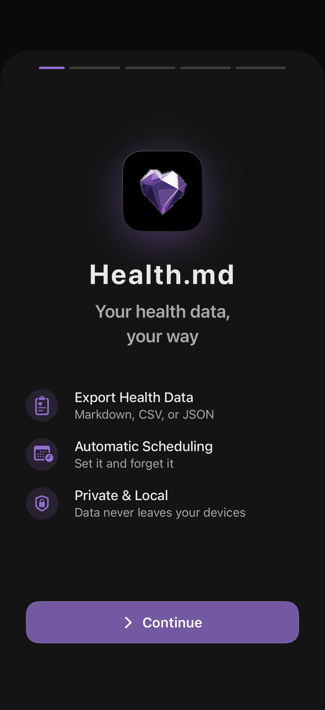

Onboarding
A 5-step welcome flow that runs the first time you open the app. Connects HealthKit, picks a vault folder, names the export subfolder, unlocks the app, and confirms you're ready to export.

What it does
Onboarding only appears on first launch. It guides you through everything you need to do once so the rest of the app just works:
The Health Access step is intentionally not gated — denying iOS's permission sheet would otherwise trap you (iOS only shows it once per install). You can grant it later via Settings.
Why these steps, in this order
HealthKit access has to be granted before the export engine can read anything. The vault picker is iOS's UIDocumentPickerViewController — it produces a security-scoped bookmark that the app stores and reuses. Picking the vault before the first export means we never have to interrupt an export run with a folder picker.
Re-running onboarding
There is no in-app reset. To redo the flow, delete and reinstall the app — your purchase will restore via Restore Purchase on the paywall.